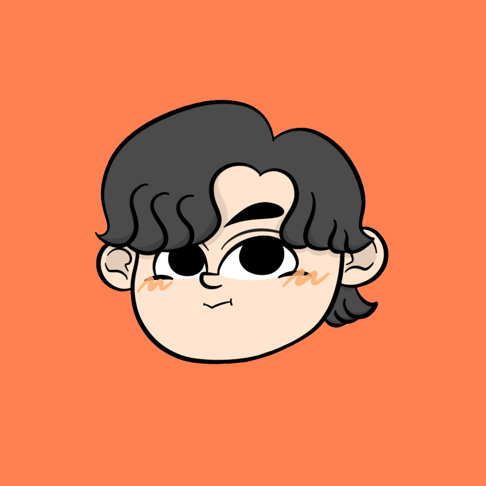

ふかお(ふかだ こうせつ)
2002年生まれ、東京都出身のデザイナー。幼少期はタイとマレーシアに住んでいました。
デザインの専門学校を卒業後、EC支援事業を行う企業にて、LP・バナー・チラシ等のデザインを担当。並行してSNS運用代行にも携わり、顧客対応・ディレクション・配信用画像の制作までを一気通貫で担当してきました。現在はフリーランスとして活動しています。
趣味はアイドル・水族館・ヒロアカ・ミセス…推しが多くて困ります(幸)